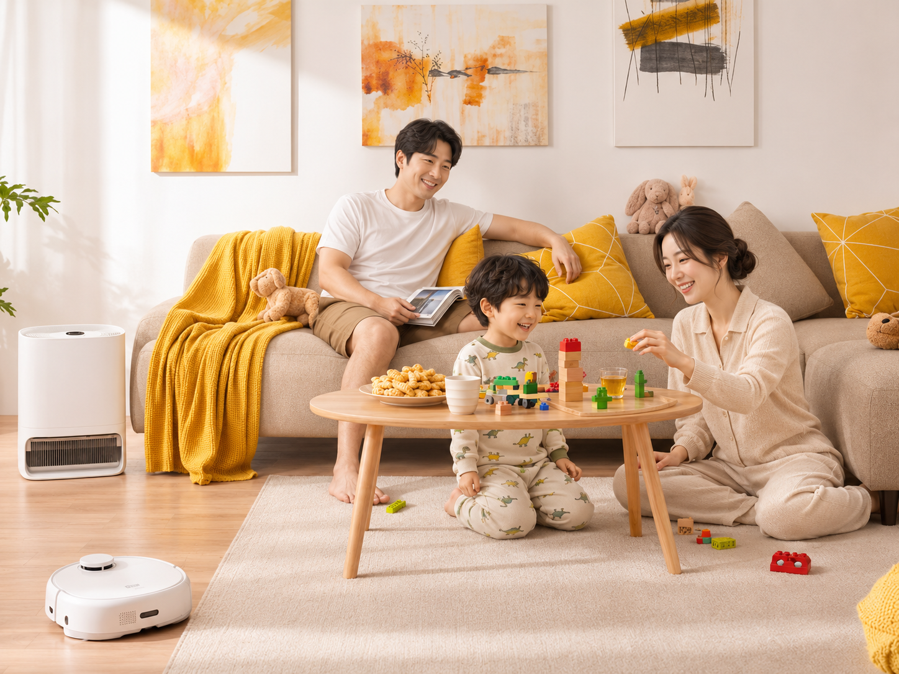

TODAY
ROUTINE
RECORD
GROWTH
MY
진단 시작하기
TODAY
ROUTINE
RECORD
GROWTH
MY
루틴 유형 진단하기
이번 주 기록
LUUP 기록
루틴 수행 기록
루틴, 성취

감정 기록
감정, 마음
집중도 기록
집중, 공부
기타메모
메모, 일기
매일 1분, 아이의 하루
작은 기록이 모여
아이의 성장 이야기가 돼요.
© 2026 LUUP